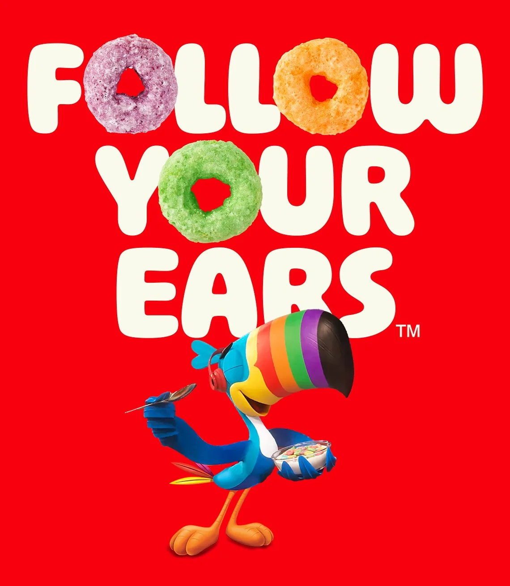
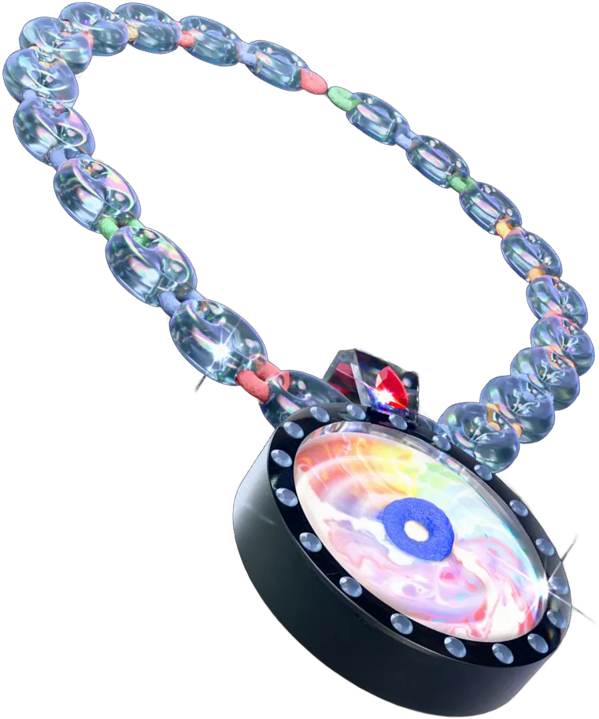
We helped Froot Loops turn its long-standing connection to hip-hop into an interactive campaign designed to rebuild brand relevance and affinity. This transformative strategy made a cultural footnote into a platform the audience could experience.
Froot Loops has been name-dropped by artists including Flo Milli, Cardi B and Offset.
Track I: The Intro
Liner Notes
- Role
- Associate Strategy Director, from brand diagnosis to creative brief
- Brand
- WK Kellogg Co, Froot Loops
- Challenge
- Rebuild cultural relevance and affinity for a heritage brand
- Idea
- Follow Your Ears: activate the brand’s existing place in hip-hop
- Scope
- Platform and integrated activation across five cities
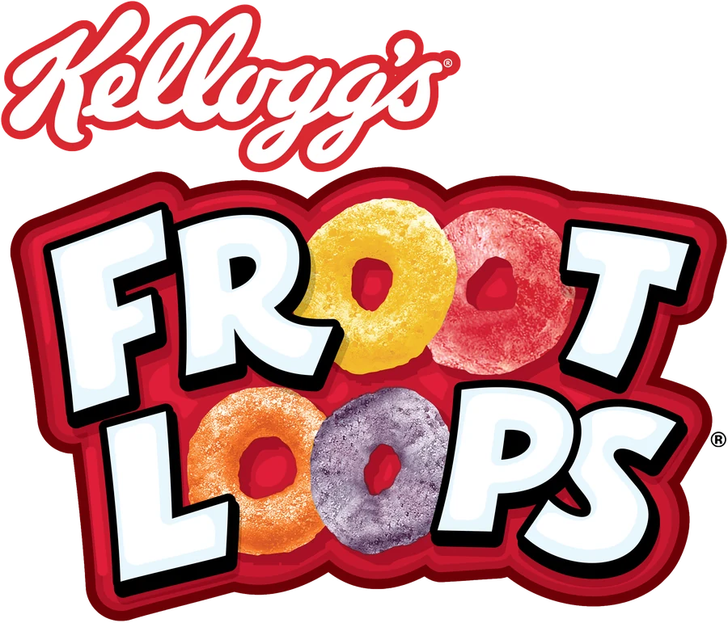
Track II: The Challenge
Not Lost Awareness.
Lost Relevance.
Not “nobody knows us,” but “we’ve stopped mattering to the people and culture that once claimed us.”
Froot Loops was never short on recognition. Everyone knows Toucan Sam. The erosion was emotional and cultural: a heritage cereal drifting from a brand people choose today toward a childhood memory.
Track III: The Insight
The Culture Was
Already Talking.
The brand didn’t need to buy its way into hip-hop. It was already there. Froot Loops shows up in more than 1,000 tracks, where the circular O doubles as slang for chain links, watches and jewelry.
1,+
hip-hop tracks name-drop Froot Loops
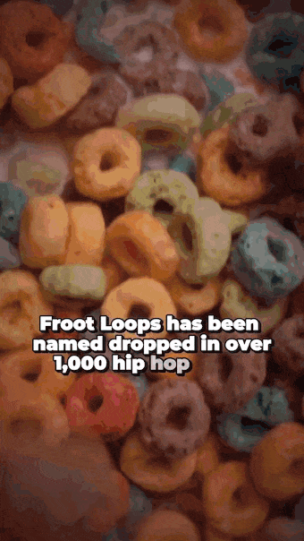
Track IV: The Creative Brief
Strategy, Translated
Into Direction.
The compressed brief handed to creative, and the proof that the insight could move into executable direction.
Brief Facts
Serving size 1 lyric
Servings per campaign 5 cities
- Single-minded proposition
- Froot Loops has always been in the music. Now you can follow it.
- Role for the audience
- Decode the lyric, prove you know the culture, win the artifact.
- Guardrails
- Celebrate the culture’s craft; never caption or explain it. Local first, always.
- Success looks like
- Fans treat it as a game they want to win, not an ad they were served.
Ingredients: one owned catchphrase, five cities, one jeweler, zero explaining.
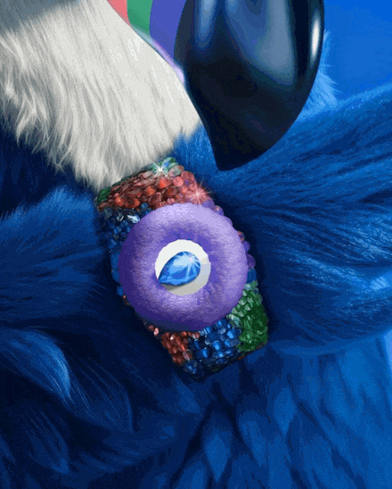
Track V: The Strategic Leap
The platform earns its power by bending an owned brand asset instead of inventing a new one. Toucan Sam’s 60-year catchphrase pivots one sense over, from nose to ears.
- Continuity buys permission. A heritage brand can enter new territory credibly when it remains recognizably itself.
- A new sense, a new role. Moving from “Follow Your Nose” to “Follow Your Ears” connects the brand to music and culture in an organic, believable way.
Participation Over Broadcast
Authenticity came from making people act, not watch. The risk with borrowed culture is looking like a tourist. The answer was a discovery mechanic, guess the lyric, that rewards fluency in the culture instead of lecturing about it.
- One job everywhere. Every touchpoint hides a clue, invites a guess and rewards the knowing.
- Host, not claimant. Participation lets the brand convene the culture instead of appropriating it.
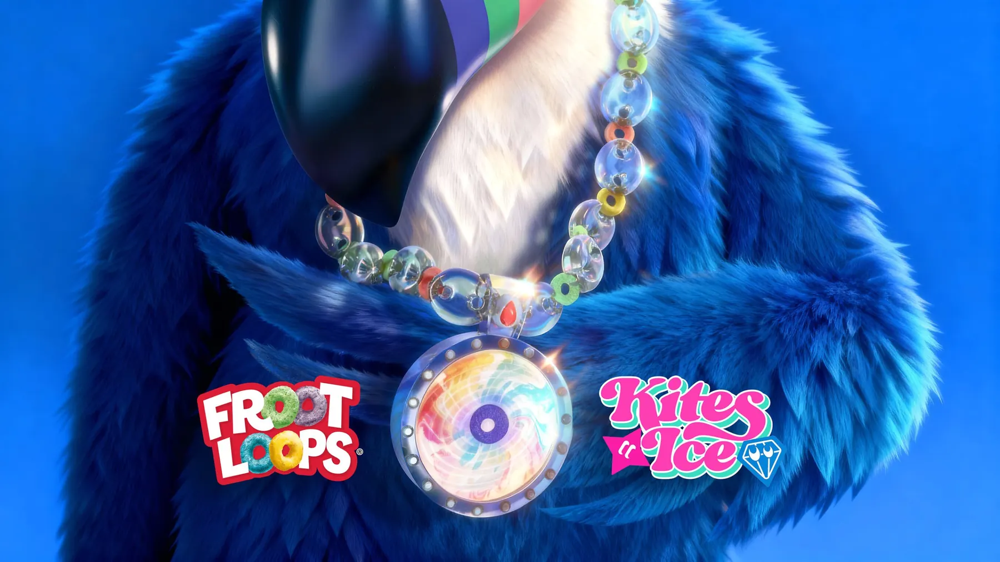
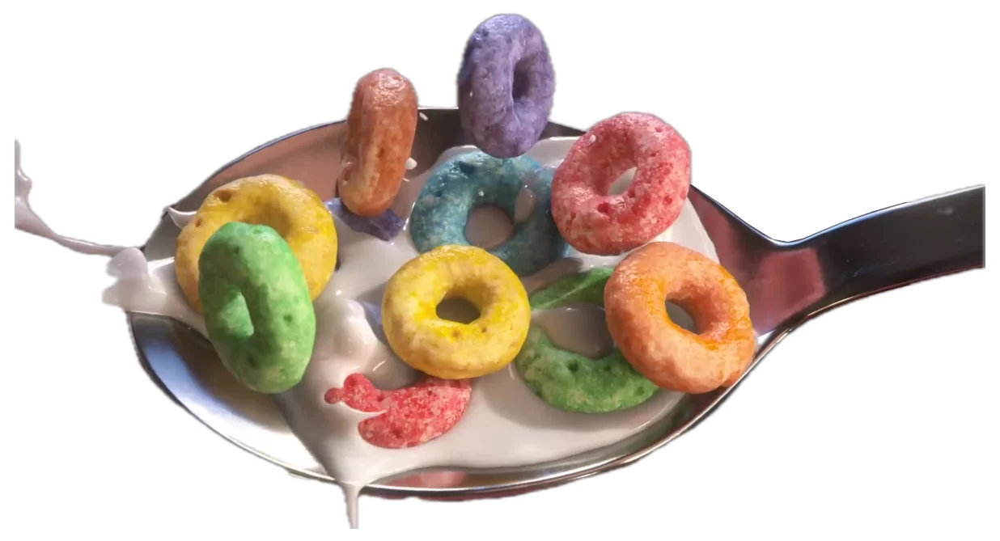
The Strategic Throughline
The connection was already real. The job was to turn listening into participation, without ever sounding like a brand that just discovered rap.
Track VI: The Activation
One Mechanic, Four Touchpoints.
Each channel does a distinct job but runs the same play. Integrated means a shared purpose, not a logo on everything.
Followed in order, the touchpoints form one path: find the clue on the street, scan into the hunt, guess the lyric, win the piece.
- Find
Street Art Drops
Hide the clue in the culture’s own medium. Local, physical, credible.
- Scan
QR Codes on Posters
Bridge physical discovery to the digital hunt.
- Guess
Instagram and TikTok Sweepstakes
Scale participation and reward fluency with exclusives.
- Win
Kristopher Kites Jewelry
Make the insight tangible. The prize is the metaphor.
Poster drops by Andre Trenier, Brittney Price, Sentrock, Gonzo247 and Frank Morrison, with jewelry by Kristopher Kites.
Casting the Clue
Credibility Through Collaborators
Who makes the work is part of the message. Commissioning recognized local artists, plus jeweler Kristopher Kites, means the culture speaks for the brand instead of the brand speaking for the culture.
- Hyperlocal placement. Spots like the University Ave and MLK Blvd corridor in NYC signal respect for specific neighborhoods, not a generic “urban” gesture.
“The brush and pen are my mic. Hip-Hop raised me, and Froot Loops fed me.”
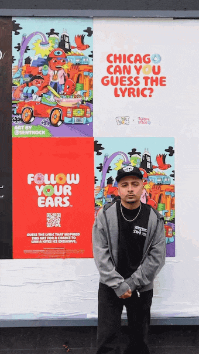
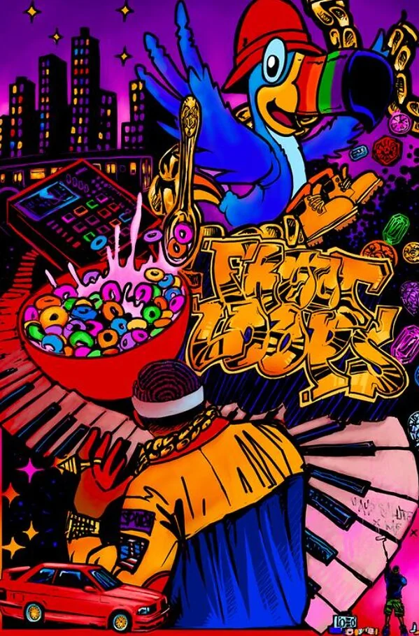
New York CityAndre Trenier, @andre.trenier
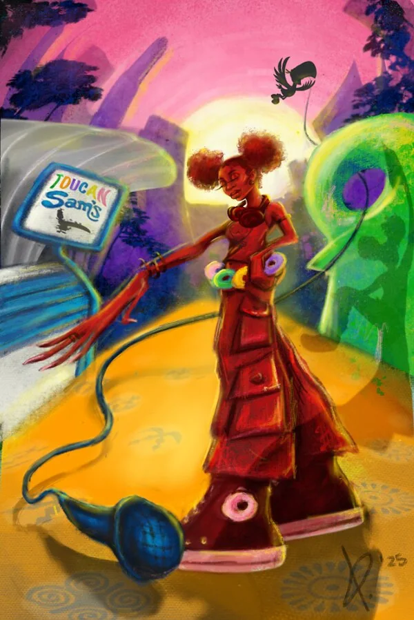
Los AngelesBrittney Price, @brittneysprice
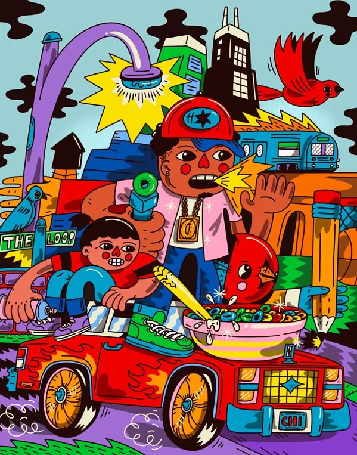
ChicagoJoseph Anthony Perez, @sentrock
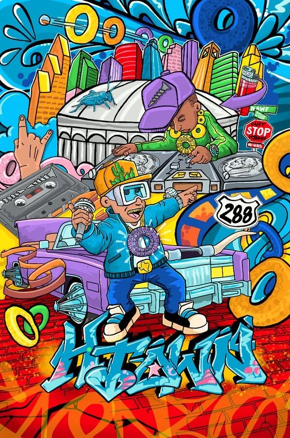
HoustonMario Figueroa Jr., @gonzo247
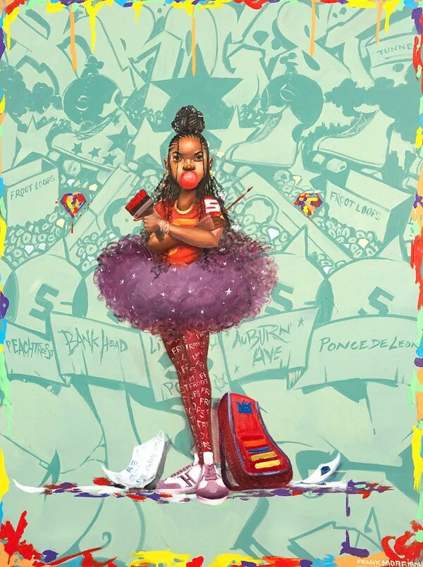
AtlantaFrank Morrison, @frankmorrison
Win: The Prize
Wearable Proof of the Insight
Kristopher Kites turned the shout-outs into two one-of-a-kind grand prizes, a necklace and pendant or a watch, set with Toucan Sam-inspired gemstones. Another 100 Kites-designed accessories went out to fans.
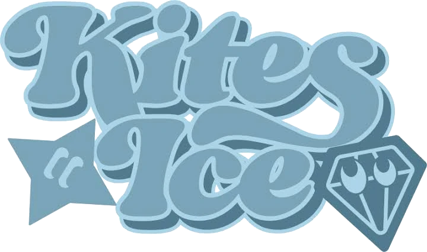
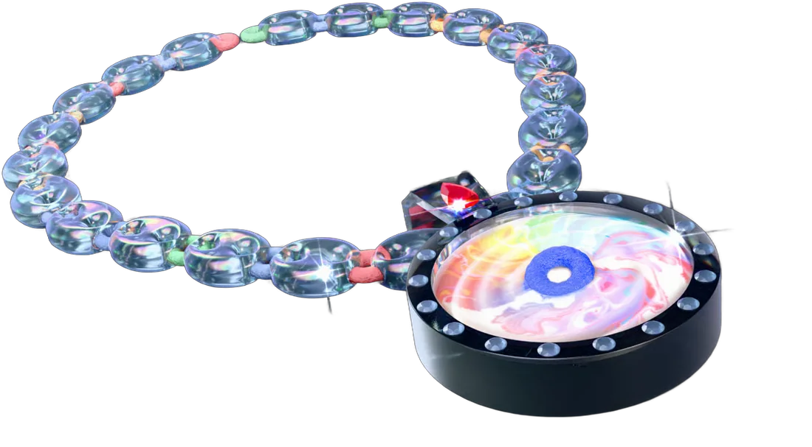
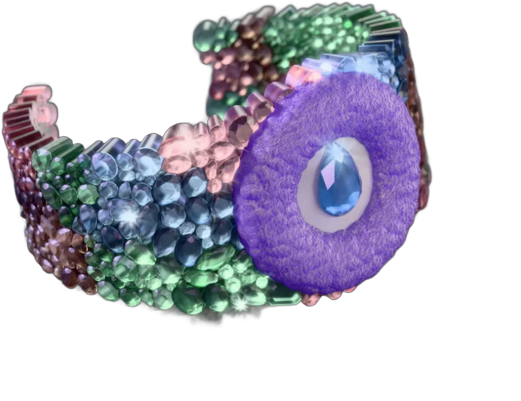
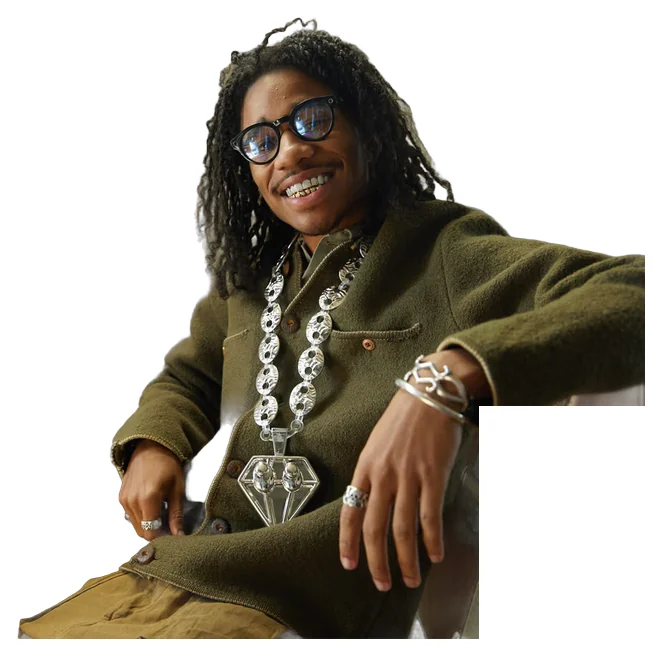
“Designing for this campaign, I was inspired by Froot Loops’ playful world, my own childhood nostalgia and the rich legacy of hip-hop.”
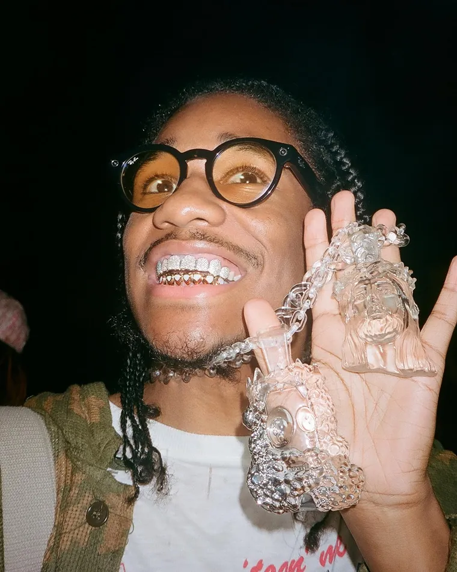
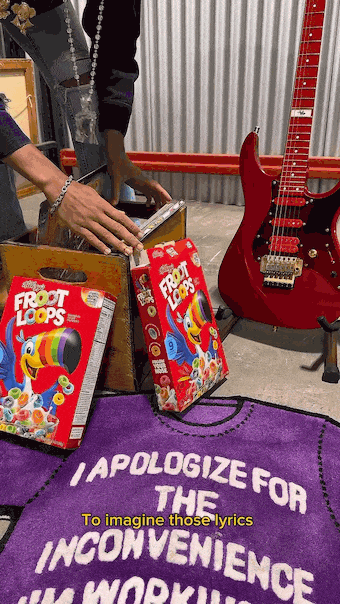
Track VII: Proof and Reflection
Key KPIs
The scorecard ties back to the diagnosis: relevance and affinity, not just reach.
Relevance
Earned mentions and organic creator pickup within hip-hop communities.
Affinity
Participation depth (guesses, scans, follows) over impressions.
Cultural Credibility
Whether artists and fans amplified it unprompted. The real test of “authentic.”
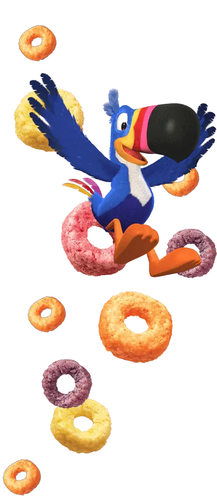
Outro
What This Case Demonstrates
- Brand DiagnosisReframing the problem as a loss of relevance and affinityTrack II
- Cultural AnalysisReading the 1,000-track connection and what it impliesTrack III
- Creative BriefingInsight translated into executable directionTrack IV
- Strategic ChoiceDeciding how to activate without cheapening itTrack V
- Platform DevelopmentFollow Your Ears, bent from Follow Your NoseTrack V
- Integrated ExperienceOne mechanic across four touchpointsTrack VI
Bonus Track
Press
Coverage across the ad trades, culture desks and design press, from Chicago to Australia and Spain.
The Coverage
The brand release, then 10 stories that picked it up.
- Ad trade Campaign Froot Loops links breakfast to beats with hip-hop-inspired campaign campaignlive.com, also in PRWeek
- Ad trade The Drum Froot Loops is fully embracing its place in hip-hop culture thedrum.com
- Marketing, Australia The Stable Publicis: Kellogg’s Froot Loops makes its hip-hop connection useful to reunite with Gen Z thestable.com.au
- Chicago trade Reel Chicago Froot Loops x Chicago Jeweler turn Hip-Hop lyrics into wearable art reelchicago.com
- Agency news DesignRush Froot Loops Turns Hip-Hop Name-Drops Into Jewelry With Kristopher Kites designrush.com
- Trends Trend Hunter Artistic Hip-Hop-Inspired Cereal Campaigns: Froot Loops Launches “Follow Your Ears” trendhunter.com
- Marketing ContentGrip Froot Loops taps hip-hop nostalgia with a jewelry collab contentgrip.com
- Entertainment The Blast TikTok’s “Music Detective” Jarred Jermaine Teams Up With Froot Loops theblast.com
- Entertainment Yahoo Entertainment Cereal Drip: Kristopher Kites Turns Breakfast Nostalgia Into Hip-Hop Bling yahoo.com
- Marketing, Spain Reason Why Los cereales Froot Loops destacan su vínculo con el hip-hop a través de una colección de joyas reasonwhy.es, in Spanish
The Shorty Awards
Winner, Physical and Digital Convergence
Finalist, Community Engagement. 18th Annual Shorty Awards.
See the entry on shortyawards.com